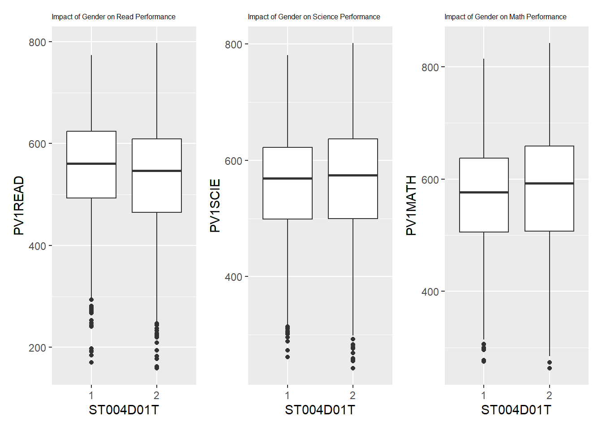

pacman::p_load(ggrepel, patchwork,
ggthemes, hrbrthemes,
tidyverse,haven,dplyr) Take Home Exercise 1
Project Brief
The primary goal for this take-home exercise are:
to reveal the distribution of Singapore students’ performance in mathematics, reading, and science, and
to reveal the relationship between these performances with schools, gender and socioeconomic status of the students.
1.Data Set
1.1 Installing R packages
1.2 Data Set
The PISA 2022 database contains the full set of responses from individual students, school principals and parents. In this exercise we are only going to use Student questionnaire data file.
1.3 Improting Data
The code chunk below uses read_sas() of haven to import PISA data into R environment
exam_data <- read_sas("data/cy08msp_stu_qqq.sas7bdat")1.4 Data Preparation
Since we only interest in the performances of Singapore’s students, we are going to filter the CNT to “SGD” only and rewrite it into a new data file to save further loading time.
exam_data_SG <-exam_data %>%
filter(CNT == "SGP")
write_rds(exam_data_SG,
"data/stu_qqq_SG.rds")Now we read the new data file and keep working on the other parts of data wrangling.
stu_qqq_SG <- read_rds("data/stu_qqq_SG.rds")As the data structure shown, we have 6606 observations (Singapore students), and 1279 variables (1279 questions in questionnaire). To compete our task, we certainly do not need all the variables in the data set, we are going to look through it and identify the related variables for our task.
Here’s the list of variables we are going to use:
CNTSCHID: School ID
PVSCIE: Average Performance of science
PVREAD: Average Performance of Reading
PVMATH: Average Performance of Math
ST004D01T: Gender
ST258Q01JA: In the past 30 days, how often did a student not eat because there was not enough money to buy food?
ST250Q01JA: Do the student have a room of his/her own
ST253Q01JA: How many digital devices with screens are a student have
After all the variables were identified we can form out final data set.
final_dataset <- stu_qqq_SG %>%
mutate(
PV1READ=rowMeans(select(stu_qqq_SG,PV1READ,PV2READ,PV3READ,PV4READ,PV5READ,PV6READ,PV7READ,PV8READ,PV9READ,PV10READ)),
PV1MATH=rowMeans(select(stu_qqq_SG,PV1MATH,PV2MATH,PV3MATH,PV4MATH,PV5MATH,PV6MATH,PV7MATH,PV8MATH,PV9MATH,PV10MATH)),
PV1SCIE=rowMeans(select(stu_qqq_SG,PV1SCIE,PV2SCIE,PV3SCIE,PV4SCIE,PV5SCIE,PV6SCIE,PV7SCIE,PV8SCIE,PV9SCIE,PV10SCIE))
) %>%
select(CNTSCHID,PV1READ,PV1SCIE,PV1MATH,ST004D01T,ST258Q01JA,ST250Q01JA,ST253Q01JA)
str(final_dataset)tibble [6,606 × 8] (S3: tbl_df/tbl/data.frame)
$ CNTSCHID : num [1:6606] 70200052 70200134 70200112 70200004 70200152 ...
..- attr(*, "label")= chr "Intl. School ID"
$ PV1READ : num [1:6606] 667 628 583 361 476 ...
$ PV1SCIE : num [1:6606] 640 672 660 344 479 ...
$ PV1MATH : num [1:6606] 605 690 677 401 436 ...
$ ST004D01T : num [1:6606] 1 2 2 2 1 1 2 2 1 2 ...
..- attr(*, "label")= chr "Student (Standardized) Gender"
$ ST258Q01JA: num [1:6606] 1 1 1 5 1 1 1 1 1 1 ...
..- attr(*, "label")= chr "In the past 30 days, how often did you not eat because there was not enough money to buy food?"
$ ST250Q01JA: num [1:6606] 2 1 1 2 2 2 1 1 2 2 ...
..- attr(*, "label")= chr "Which of the following are in your [home]: A room of your own"
$ ST253Q01JA: num [1:6606] 7 8 7 6 7 7 8 8 8 7 ...
..- attr(*, "label")= chr "How many [digital devices] with screens are there in your [home]?"Data quality issue: All the columns are stored as numerical
final_dataset$CNTSCHID <- as.character(final_dataset$CNTSCHID)
final_dataset$ST250Q01JA <- as.character(final_dataset$ST250Q01JA)
final_dataset$ST004D01T <- as.character(final_dataset$ST004D01T)The last step will be checking missing value and delete them
final_dataset <- na.omit(final_dataset)2.Data Analysis and Visulization
2.1 Performance Distribution
We are going to graph the distribution of performance in each subject to get a clearer view about how Singapore students doing in the exam.
show code
p1<- ggplot(data=final_dataset,
aes(x = PV1READ)) +
geom_histogram(bins=20,
boundary = 100,
color="grey25",
fill="grey90") +
ggtitle("Reading scores") +
theme_ipsum()
p2<-ggplot(data=final_dataset,
aes(x = PV1SCIE)) +
geom_histogram(bins=20,
boundary = 100,
color="grey25",
fill="grey90") +
ggtitle("Science scores") +
theme_ipsum()
p3<-ggplot(data=final_dataset,
aes(x = PV1MATH)) +
geom_histogram(bins=20,
boundary = 100,
color="grey25",
fill="grey90") +
ggtitle("Math scores") +
theme_ipsum()
Perf_dis <- (p1 / p2) | p3
Perf_disWe can notice all the plots have left skewed which indicate the median of the performance bigger than the mean, which means over 50% of students in Singapore can get a grade above the mean performance.
2.2 Factors might have an impact on performance
In this section, we are going to examine different factors and their impacts on student performance.
2.2.1 School vs. Performance
In this section we use box plot to illustrate the performance in different school. To see if there is any difference. Since there are too many school in our data set, the visualization on all of them will be difficulty to read, therefore we are going to compare the differences between schools instead. The code chunk below shows the data preparation phrase
average_math_SG <- mean(final_dataset$PV1MATH)
average_scie_SG <- mean(final_dataset$PV1SCIE)
average_read_SG <- mean(final_dataset$PV1READ)
final_dataset_sch <- final_dataset %>%
group_by(CNTSCHID) %>%
mutate(average_math_diff = abs(mean(PV1MATH)-average_math_SG),
average_science_diff = abs(mean(PV1SCIE)-average_scie_SG),
average_read_diff = abs(mean(PV1READ)-average_read_SG)) %>%
select(CNTSCHID, average_math_diff, average_science_diff, average_read_diff) %>%
unique() p4 <-ggplot(data = final_dataset_sch, aes(y = average_math_diff)) +
geom_boxplot() +
geom_boxplot(width = 0.1) +
stat_boxplot(geom = "errorbar", width = 0.05) +
stat_summary(aes(x = 0),
geom = "point",
fun = "mean",
colour = "red",
size = 1) +
scale_y_continuous(NULL, limits = c(0,220)) +
scale_x_continuous("average math diff", breaks = NULL) +
theme_minimal()
p5 <-ggplot(data = final_dataset_sch, aes(y = average_science_diff)) +
geom_boxplot() +
geom_boxplot(width = 0.1) +
stat_boxplot(geom = "errorbar", width = 0.05) +
stat_summary(aes(x = 0),
geom = "point",
fun = "mean",
colour = "red",
size = 1) +
scale_y_continuous(NULL, limits = c(0,220)) +
scale_x_continuous("average science diff", breaks = NULL) +
theme_minimal()
p6<-ggplot(data = final_dataset_sch, aes(y = average_read_diff)) +
geom_boxplot() +
geom_boxplot(width = 0.1) +
stat_boxplot(geom = "errorbar", width = 0.05) +
stat_summary(aes(x = 0),
geom = "point",
fun = "mean",
colour = "red",
size = 1) +
scale_y_continuous(NULL, limits = c(0,220)) +
scale_x_continuous("average read diff", breaks = NULL) +
theme_minimal()
school_impact<-p4|p5|p6
school_impactIn the graph, we can conclude that there is huge difference on performance across different school.The difference between school can range up to 220. Therefore, we can conclude that choosing different school could definitely affect students’ performance.
2.2.2 Gender vs. Performance
Still, we are going to apply box plot to see how girls and boys doing in their performance.
p7<-ggplot(data = final_dataset, aes(x =ST004D01T , y = PV1READ)) +
geom_boxplot() +
ggtitle("Impact of Gender on Read Performance")+
theme(plot.title = element_text(size = 6))
p8<-ggplot(data = final_dataset, aes(x =ST004D01T , y = PV1SCIE)) +
geom_boxplot() +
ggtitle("Impact of Gender on Science Performance")+
theme(plot.title = element_text(size = 6))
p9<-ggplot(data = final_dataset, aes(x =ST004D01T , y = PV1MATH)) +
geom_boxplot() +
ggtitle("Impact of Gender on Math Performance")+
theme(plot.title = element_text(size = 6))
gender_impact<-p7+p8+p9
gender_impact
As shown in the graph, no serious difference detected. Therefore, we can conclude that the gender will not be a factor that cause the differences in performance.
2.2.3 Having Own room or not vs. Performance
As the children grown, they will start to require for the “private space”, therefore we are going to check if having private space can actually cause impact on student performance or not.
p10<-ggplot(data = final_dataset, aes(x =ST250Q01JA , y = PV1READ)) +
geom_boxplot() +
ggtitle("Private Space vs. Read Performance")+
theme(plot.title = element_text(size = 6))
p11<-ggplot(data = final_dataset, aes(x =ST250Q01JA , y = PV1SCIE)) +
geom_boxplot() +
ggtitle("Private Space vs. Science Performance")+
theme(plot.title = element_text(size = 6))
p12<-ggplot(data = final_dataset, aes(x =ST250Q01JA , y = PV1MATH)) +
geom_boxplot() +
ggtitle("Private Space vs. Math Performance")+
theme(plot.title = element_text(size = 6))
pri_impact<-p10+p11+p12
pri_impactAs the box plot shown, the mean performance of students who having their own room are slightly higher than those students who do not. Therefore, we can conclude that having own room can be a factor that cause the difference in student’s performance.
2.2.4 Starving vs. Performance
Question code ST258Q01JA is the a make me shock the most. I do not know where this questionnaire is taking place but certainly a developed region. But still, people still get staved here. The question is “In the past 30 days, how often did a student not eat because there was not enough money to buy food?”. I think this poverty will definitely affect the performance in a good way or bad way. Since the column is not a discrete variable anymore, we need use the plot other than box plot. In this case, the scatter plot works perfect for us.
p13 <- ggplot(data=final_dataset,
aes(x= ST258Q01JA,
y=PV1READ)) +
geom_point() +
geom_smooth(method=lm,
size=0.5) +
coord_cartesian(xlim=c(1,5),
ylim=c(0,850)) +
ggtitle("Number of Missing meal vs. Read Performance")+
theme(plot.title = element_text(size = 6))
p14 <- ggplot(data=final_dataset,
aes(x= ST258Q01JA,
y=PV1SCIE)) +
geom_point() +
geom_smooth(method=lm,
size=0.5) +
coord_cartesian(xlim=c(1,5),
ylim=c(0,850)) +
ggtitle("Number of Missing meal vs. Science Performance")+
theme(plot.title = element_text(size = 6))
p15 <- ggplot(data=final_dataset,
aes(x= ST258Q01JA,
y=PV1MATH)) +
geom_point() +
geom_smooth(method=lm,
size=0.5) +
coord_cartesian(xlim=c(1,5),
ylim=c(0,850)) +
ggtitle("Number of Missing meal vs. Math Performance")+
theme(plot.title = element_text(size = 6))
starv_impact<-p13+p14+p15
starv_impact
As the plot shown, the student who do not worry about “having food or not” tend to have higher performance. So we can conclude that, having survival issue have impact on students’ performance.
3.Conclusion
After the visual analytic about the data set. We can have some basic conclusion on the performance of Singapore student.
Over 50% of student can get the grade above average, which means they are doing well
Students with family that have enough financial ability that provides stable survival needs and personal room tend to have better performance
The performance difference among school are extremely huge, more detailed research are required to find out the reason causing this phenomena